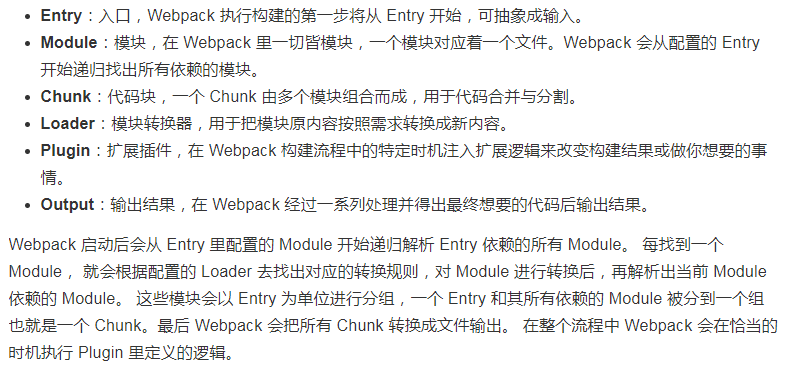

webpack模块打包
模块化思想
模块化是把一个复杂的系统分解到多个模块里编码，过去开发网页通过命名空间方式封装代码库，例如jQuery库把它的API都放在$下，加载完jQuery后通过$.调用API，但这样会造成命名冲突，如zepto也是放在$下，同时无法管理项目的依赖关系和加载顺序。
模块化规范
- CommonJS通过require方法同步地加载依赖(const moduleA=require('./文件A'))，通过module.exports(module.exports=moduleA.fn)向外暴露接口，Node.js也是采用这种方式，但无法直接运行在浏览器环境下，必须通过工具转换成ES5。
- AMD采用异步方式加载依赖的模块，解决浏览器环境的模块化问题，不过没有原生JS支持需要导入AMD库(requirejs)才能使用。定义模块 define('moduleA',['dep'],function(dep){return exports;})，导入模块require(['module'],function(module){})。
- ES6模块化终极模块化方案，导入import { readFile } from 'fs'，导出export default{...}。
构建工具
提高前端开发效率的新思想和新框架都有一个共同点：源代码无法直接运行，必须通过转换后才可正常运行，大多数构建工具都是用Node.js开发的
配置webpack环境
- webpack/webpack-cli必须全局安装否则webpack指令无效
- webpack是node应用，先安装node的，查看npm源地址npm config get registry。配置淘宝镜像npm config set registry https://registry.npm.taobao.org
- npm install -global webpack webpack-cli
- 项目文件夹中npm init 创建【package.json】配置文件
- 项目文件夹中 npm install webpack --save-dev
- 在命令提示符中输入webpack -v，查看webpack是否配置成功以及当前webpack的版本信息
- entry->output
- Loader，文件转换打包
- Plugin，Webpack是通过plugins属性来配置需要使用的插件列表的。 plugins 属性是一个数组，里面的每一项都是插件的一个实例，在实例化一个组件时可以通过构造函数传入这个组件支持的配置属性。
webpack核心概念
